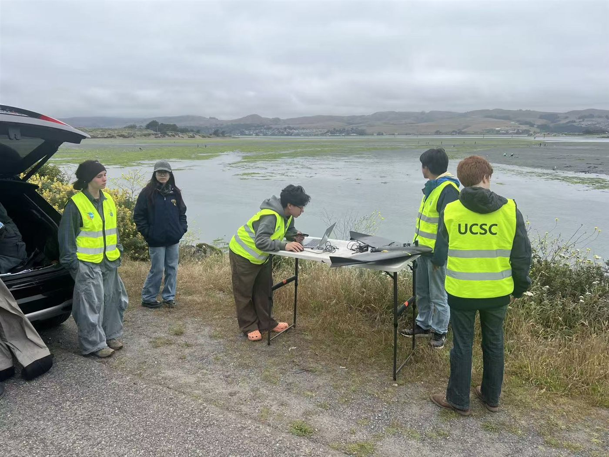

Student-led summer 2026 fieldwork maps seagrass along the West Coast
This summer, GeoFly Lab students led our 2026 field season for the NSF-funded coastal seagrass project. Working on the lowest tides of the month, the team used drones to map eelgrass meadows at Bodega Bay and Tomales Bay in California, at Coos Bay and Yaquina Bay in Oregon, and at Friday Harbor in Washington, then turned the imagery into maps with GIS, remote sensing, and computer vision.

The team
PI Bo Yang and PhD student Yuhua Wang led the field team, and Gwyneth Grivich led the story map. Griffin Svec-Burdick, Penn Frank, Denise Marc, and Max Tcheng also joined the fieldwork, flying and spotting drones, laying out flight plans, and processing data in the evenings after long mornings on the mudflats.
Why eelgrass
Eelgrass (Zostera marina) is a foundation species of West Coast bays and estuaries. Its meadows shelter young fish and invertebrates, protect shorelines from erosion, filter runoff, and store carbon. They are also under pressure from warming water and eelgrass wasting disease, caused by the pathogen Labyrinthula zosterae. Mapping the same meadows year after year shows where they are holding steady, growing, or being lost.
In the field
In Oregon, the team mapped Fossil Point, Barview, Idaho Flats, Greenbridge, and Sally Bend South alongside Dr. Lillian Aoki’s University of Oregon marine science team. Around Bodega Bay and Tomales Bay, working out of the UC Davis Bodega Marine Laboratory, they mapped Lawson’s Landing, Millerton, Westside, Mason Marina, Blake’s Landing, Campbell Cove, and Nick’s Cove. The team also carried the surveys north to Friday Harbor in Washington’s San Juan Islands.
While the drones flew, partner teams sampled eelgrass along fixed transects that are revisited every year, recording cover and collecting leaves to check for wasting disease. Students joined in on the mudflats and in the lab, learning how leaves are cleaned, measured, and scanned for disease. These ground observations are matched to the drone imagery, so each map can be checked against what was found on the ground.
From drone images to maps
Back at UC Santa Cruz, the overlapping drone photos are stitched into high-resolution, georeferenced orthomosaics. With GIS and remote sensing, the team outlines eelgrass beds and compares them with maps from earlier years. Computer vision and AI models help classify eelgrass cover and support disease surveillance across many sites, turning thousands of images into consistent, coast-wide data.
A student-led story map
Gwyneth Grivich led the story map Drone Mapping Eelgrass Beds of the West Coast, which follows the Oregon and Bodega Bay trips day by day and presents her own research. Using ArcGIS Pro and ModelBuilder, she compared 2019 and 2024 eelgrass maps at Fossil Point, Sally Bend South, Westside, and Mason Marina, sorting each area into lost, gained, or stable eelgrass. Her early results show more loss than gain at most of these sites. Next she plans to make year-to-year comparisons, add sites in Washington and Alaska, and compare the changes with sea surface temperature.
Our thanks to the marine science teams at the University of Oregon, Oregon State University, and the UC Davis Bodega Marine Laboratory. This work is supported by the National Science Foundation (NSF B2 and NSF OCE). Gwyneth’s summer research was supported by the UCSC SUPERDAR program, funded by the U.S. Department of Agriculture. Learn more about the project on our Coastal Seagrass Mapping page.